Operating Documentation
Direction 5193574-800, Rev# 22
LightSpeed 7.X Service Methods
Module Version 12.0, Version Date 6/12/15
Operating Documentation |
This procedure must be followed in order of the steps given to avoid potential hardware damage to the detector and to have the highest chance. There are a number of detector types and different FRU’s dependent on slot location in each detector. The diagrams below along with the replacement parts list in this procedure can help make sure the right part is used in the right location.
Illustration 1: VDAS32 - Sherlock 32 slice Detector
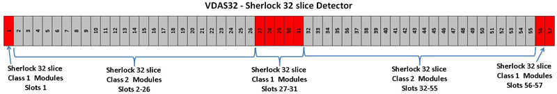
Illustration 2: VDAS64 - 64 slice Sherlock Detector
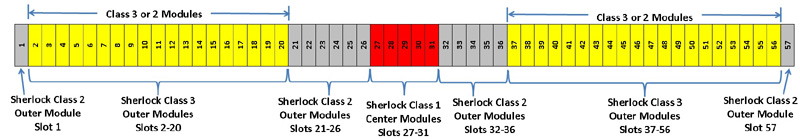
Illustration 3: HDAS64 - HALO Detector
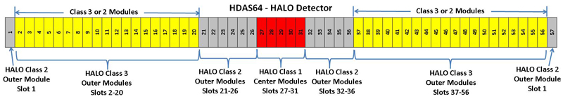
Illustration 4: HDAS_Saturn and SDDAS_Saturn_64 = Saturn Detector
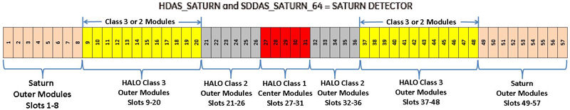
Illustration 5: HDAS_HD - Colorado Detector
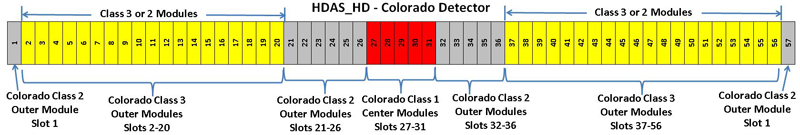
| NOTE: | Replacement Parts below marked as “CHINA ONLY” are only available in China due to regulatory requirements. |
| Item | Qty | Effectivity | Part# | Manufacturer | |
|---|---|---|---|---|---|
| Deionizing fan (optional) | 1 | - | 2335059 | - | |
| VCT Shipping Collector Kit | 1 | - | 5198409 (Supplied with System) | - | |
| Module replacement tools | 1 | - | Supplied with FRU kit | - | |
| Module alignment gage (order from Tool Depot when working with modules 27-31) Optional | 1 | - | 5172309 | - | |
| 2.5mm and 3mm hex bit for Torque driver (shipped with module kits) | 1 | - | - | - | |
| T10 Torx bit for module flex screws if Open Pixel issue | 1 | - | - | - | |
| Item | Qty | Effectivity | Part# | Manufacturer |
|---|---|---|---|---|
| Tie-wraps | AR | - | - | - |
| Item | Qty | Effectivity | Part# | Manufacturer | |
|---|---|---|---|---|---|
| Sherlock VDAS 32 slice Detector | NA | - | - | - | |
| Single class 1 module L-FINE 32 slice systems (slots 1, 27-31, 56, 57) | 1 | - | 5134959 | - | |
| Single class 2 outer module L-FINE 32 slice systems (slots 2-26 and 32-55) | 1 | - | 5134959-2 | - | |
| - | - | - | - | - | |
| Sherlock VDAS 64 slice Detector | NA | - | - | - | |
| Single center module Class 1 (VDAS64 slots 27-31) | 1 | - | 5136400-3 | - | |
| Single outer module Class 2 (VDAS64 slots 1, 21-26, 32-36, 57) | 1 | - | 5136400 | - | |
| Single Class 3 module (VDAS64 slots 2-20, 37-56) | 1 | - | 5136400-4 | - | |
| Single center module Class 1 (VDAS64 slots 27-31) - CHINA ONLY | 1 | - | 5202059 | - | |
| Single outer module Class 2 (VDAS slots 1, 21-26, 32-36, 57) - CHINA ONLY | 1 | - | 5202049 | - | |
| Single Class 3 module (VDAS slots 2-20, 37-56) - CHINA ONLY | 1 | - | 5202049-4 | - | |
| - | - | - | - | - | |
| HALO (HDAS64) Detector | NA | - | - | - | |
| Single center module Class 1 (HDAS64 slots 27-31) | 1 | - | 5196401 | - | |
| Single outer module Class 2 (HDAS64 slots 1-26, 32-57) | 1 | - | 5196402 | - | |
| Single module Class 3 (HDAS64 Slots 2-20, 37-56 ) | 1 | - | 6296402-3 | - | |
| Single center module Class 1 (HDAS64 slots 27-31) - CHINA ONLY | 1 | - | 6296401 | - | |
| Single outer module Class 2 (HDAS64 Slots 1, 21-26, 32-36, 57) - CHINA ONLY | 1 | - | 6296402 | - | |
| Single module Class 3 (HDAS64 Slots 2-20, 37-56 ) - CHINA ONLY | 1 | - | 6196402-3 | - | |
| - | - | - | - | - | |
| Saturn (HDAS_Saturn and SDDAS_Saturn_64) Detector | NA | - | - | - | |
| Single center module Class 1 (HDAS_SATURN_64 slots 27-31) | 1 | - | 5196401 | - | |
| Single outer module Class 2 (HDAS_SATURN_64 slots 9-26, 32-48) | 1 | - | 5196402 | - | |
| Single module Class 3 (HDAS_SATURN_64 Slots 9-20, 37-48) | 1 | - | 6296402-3 | - | |
| Single FL outer module (HDAS_SATURN_64 slots 1-8, 49-57) | 1 | - | 5202201 | - | |
| Single center module Class 1 (HDAS_SATURN_64 slots 27-31) - CHINA ONLY | 1 | - | 6296401 | - | |
| Single outer module Class 2 (HDAS_SATURN_64 slots 21-26, 32-36) - CHINA ONLY | 1 | - | 6296402 | - | |
| Single module Class 3 (HDAS_SATURN_64 Slots 9-20, 37-48) - CHINA ONLY | 1 | - | 6196402-3 | - | |
| - | - | - | - | - | |
| Colorado (HDAS_Colorado) Detector | NA | - | - | - | |
| Center module set of 5, Class 1 (HDAS_HD, slots 27-31) | 1 set | - | 5206405 | - | |
| Single outer module Class 2 (HDAS_HD, slots 1-26, 32-57) | 1 | - | 5206402 | - | |
| Single outer module Class 3 (HDAS_HD, Slots 2-20, 37-56 ) | 1 | - | 6306402-3 | - | |
| Center module set of 5, Class 1 (HDAS_HD, slots 27-31) - CHINA ONLY | 1 set | - | 6306405 | - | |
| Single outer module Class 2 (HDAS_HD, Slots 1, 21-26, 32-36, 57) - CHINA ONLY | 1 | - | 6306402 | - | |
| Single outer module Class 3 (HDAS_HD, Slots 2-20, 37-56 ) - CHINA ONLY | 1 | - | 6206402-3 | - | |
| ||||
| CRUSH HAZARD. | ||||
| UNEXPECTED GANTRY ROTATION CAN CAUSE SERIOUS INJURY. | ||||
| Never service the gantry with the axial drive enabled. Use the gantry rotation lock to lock out gantry rotation. See safety menu of Service Document gui for appropriate procedures. |
| ||||
| Follow ALL required safety and PPE procedures customary for your organization, when working on this product. | ||||
| Condition | Reference | Effectivity |
|---|---|---|
Due to risk of damage and tight alignment requirements for image quality, only persons certified by GE Healthcare specifically on detector module replacement may safely perform this procedure. Do NOT attempt this procedure if you have not been trained. | - | - |
If the problem reported was an Open Pixel, do not open the FRU module yet. Issue may be loose module flex connection that can be easily repaired by tightening the screws. Use the module replacement tools in the DAS/Detector service kit. Information for tightening screws is in this procedure. | - | - |
Illustration 6 shows the special tools shipped with the new module with the exception of the handle. The handle was only shipped with and used on the original VDAS systems. All new modules come with a built in handle.
Illustration 6: Special Tools

| Illustration 6 Key | |
| A | Handle |
| B1 | Multi-tool, version 1 |
| B2 | Multi-tool, version 2 |
| C | Bias Tool |
| D | Controlled Seating Tool |
The Handle (Older VDAS detectors) is attached to the heat sink of the module to aid in removal and installation. The heat sink and digital screws can be used to lift the module out if the handle is not available. Newer modules may come with built in handles on the heatsink.
The Controlled Seating Tool is used while installing a module to make sure the alignment pins on the module are centered on the detector collimator to avoid any damage to the detector collimator plates during module insertion. There are two different tools for this application. The wider tool is used for the HDAS_SATURN_64 modules 1-8 and 49-57 and the VCT32 modules.
The Bias tool is attached via magnet to the detector rail after seating the new module. The Bias tool pushes the module against the back detector rail with a known force for proper alignment while the module screws are being torqued. There are two slightly different tools for this application. Refer to Illustration 7 to understand which tool to use.
The Multi-tool is used to aid in clamping the wedge lock after insertion using the notch on one end and for removing light seal clips using the pin on the other end. Different versions of the tool exist but all look very similar and have the same functionality.
Illustration 7: Bias tool reference

| Illustration 7 Key | |
| C1 | Bias tool used with VCT 64 modules |
| C2 | Bias tool used with VCT 32 and HDAS_SATURN_64 modules |
If replacing a center module (slots 27-31) perform the following steps. Otherwise go to step 2.
From a C-shell type enableBISfeature . If this has already been done in the past, the message will indicate that this function is already enabled.
If the system did not indicate that the feature was already enabled then a console reboot is necessary to put the change into effect.
At the console start the [FRDM Wizard] from the Common Service Desktop Replacement tab.Illustration 8 shows the main screen.
Illustration 8: Process Tool
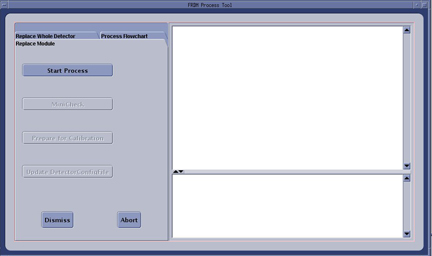
Select the [Replace Module] tab and then [Start Process]. This will set up any necessary preconditions needed in the system software to prepare for a detector module replacement. The physical module replacement can now be performed.
Move the table full back out of the gantry and move it full down to allow you to completely move the front cover away from the gantry.
Stop the rotor of X-ray tube in case of Liquid Bearing Tube before HVDC off. Refer to Liquid Bearing Tube Rotor stop procedure for details.
Remove the right side gantry cover and disable Axial Drive and HVDC from the service switch panel.
Refer to Replacement → Gantry → Enclosure → (Cover Removal Procedures).
Position the detector at 12 o'clock and lock gantry rotation.
Shut down all gantry power from the service switch panel.
Remove the side, top and front gantry covers. The rear cover needs to be released and moved back slightly to allow easy access to the back detector rail.
Reconnect the front cover display and keypad and turn power on to the gantry to allow the table to be moved to full up position to use as a work table. Then power down the gantry again.
Cover the Tube Collimator port to protect it against dropped tools or screws. (Cloth or any other available item)
Remove the Detector Air Plenum as shown in Detector Air Plenum Removal/Installation.
| NOTE: | Reminder that using the mouse right button on the above document link and selecting “Open in new Window” will keep this document open at the same time for ease in use. Can leave the Air Plenum instructions open for later use when reinstalling the plenum. |
Make sure ESD strap is in use prior to continuing.
| NOTE: | The order of the following steps is critical to success. Do NOT change the order. Read each step and cautions completely prior to performing that step. |
Remove cover band end screws (not captive) and loosen 4 middle screws, then slide off the screw cover bands. See Illustration 9. Remove the middle screws if needed, the cover bands are slotted in the middle.
| NOTE: | If any of the cover band screws are right next to the screw holes for the module being replaced, those screws will need to be removed so they don't interfere with the module seating tool used during module installation. |
Illustration 9: Screw Cover Bands
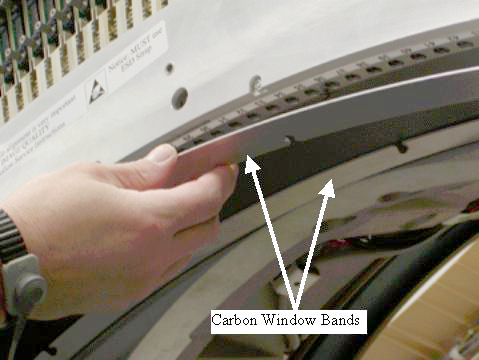
Remove torx screws (not captive) on the light seal plate with the supplied bit, then lift off the light seal plate. See Illustration 10.
| NOTE: | If the detector does not have torx screws on the light seal plate, the use a hex wrench to remove the screws. Replace with torx screws supplied with the replacement module during reassembly. Early detectors had hex head screws that will deform with usage. |
Illustration 10: Light Seal Plate

Put on gloves (supplied with system) before continuing to avoid introducing any contaminates on the detector module or around the detector collimator.
Remove module screws on either side of carbon window for the module being replaced. See Illustration 11.
Illustration 11: Module Screws

Completely loosen the digital cable thumb screws until they pull back freely from the backplane. Do NOT release the wedge clamp yet. See Illustration 12.
Illustration 12: Digital Screws and Wedge Clamp
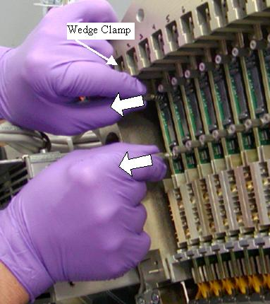
Pull both cable screws away from the backplane approximately 3/8” (8mm) to release the cable edge card connector from the backplane.
Remove the light seal clip on each side of the module. Use the Multi-Tool supplied as shown in Illustration 13. There are two different designs for this tool (see Illustration 6)
| NOTE: | Early 64 slice Sherlock (VDAS64) detectors and all 32 slice detectors manufactured before JULY 2009 did not have light seal clips so this step can be skipped if the clips are not installed. |
Insert the MultiTool pin into the Light Seal clip hole, tilt the tool up to pull clip out then pull straight out to finish removing clip.
Tool has a magnet to keep metal clips from falling into gantry during removal. The newer clips are plastic, so make sure to catch these clips during removal, as the magnetic tool will have no effect.
Illustration 13: Light Seal Clip Removal

Release and remove the wedge clamp.
| NOTE: | Releasing the wedge clamp prior to disconnecting the digital cable from the backplane can damage the digital cable screws or the backplane connector. |
Hold onto the module built in black handle and one of the digital cable screws. Lift the module up until the Light seal collar completely clears the brackets it is resting between then slide it out. See Illustration 14 and Illustration 15.
Module alignment notches on the Light seal collar and the pins at the other end of the board must clear the alignment slots to allow the module to slide out of the detector.
A digital cable screw can be held with the other hand to aid in guiding the module up and out if needed.
If the module does not seem to move up, check the digital cable. Make sure it is released from the backplane.
If the module seems to be stuck to the rail such that the flex connections are pulling up when the entire assembly is lifted up, STOP. Completely insert the Controlled Seating Tool (seen in Illustration 18) into the detector rails for that module. This will keep the module from hitting the detector collimator plates while you gently push up with a finger on the detector module front edge to release it from the detector rails. Remove the seating tool and continue to remove the module from the detector.
Illustration 14: Module Removal
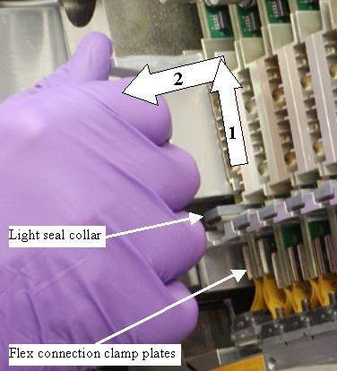
Illustration 15: Module Alignment Pins

| NOTE: | After removing the module avoid touching the flex connection or detector module face. Hold the module by the heat sink or metal bracket on the opposite end of the of the assembly. |
After removing the module visually inspect the detector rails to see if any Thermal Mount pads from the detector module were left (Some early modules had this problem). The module front end can also be inspected to see if both side pads are still in place. See Illustration 16. The pads are seen as thin white squares on the plates that the mounting screws go through. Carefully remove any pads left on the rails without touching the detector collimator plates. Any damage to the collimator plates will require full detector replacement. Procedure VCT Detector Thermal pad Removal must be used to remove any thermal pads.
Illustration 16: Detector Module Front End
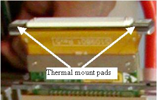
If the initial problem was an Open Pixel, first check the torque on the module flex screws before installing a new module using the following steps. These steps require a Torx T10 size driver bit and the torque driver. Loose flex screws are typically the problem for any open pixel issue. Resolution will be known before any calibrations are run.
Torque the 3 flex connection screws to the following setting starting with the center screw.
| 0.5 N-m | NA lb-ft | 4 lb-in | 4.6 kg-cm |
Illustration 17: Flex Connection Screws

Install Module as shown in the next sections and run maratio’s test from DASTools to see if problem has been resolved.
If the problem was not resolved, install new module
If a center set (5 matched modules) is being used repeat this section for all 5 center modules in slots 27 - 31.
The order of the following steps is critical to success. Do NOT change the order. Read each step and cautions completely prior to performing that step.
| NOTE: | Do not touch the detector module face or flex connections. Handle the module by the heat sink, black handle, or metal bracket on the opposite end of the assembly. |
| NOTE: | If replacement is a center set (5 matched modules) in slots 27 - 31, make sure you install the new center modules in the slot location marked on the new modules. Example, new module marked as slot 27 MUST be installed in detector slot location 27. Repeat the module installation steps for each of the 5 center modules. |
Install the new module using the following order of steps. (See Illustration 18 for illustrated process with numbered references)
With one hand, insert the Controlled Seating Tool part way (1) so pins do not extend above detector rails to avoid scratching the detector module during insertion. Putting your thumb between the tool and the detector can help control the tool insertion while you insert the module.
With the other hand, insert the Module in (2) toward backplane using the black handle.
The Detector light seal brackets must be between the module flex connection plates and module light seal plate as shown in Illustration 15 to allow module to slide into detector.
Push the Controlled Seating Tool completely up into detector rails (3a) then lower module down (3b) on top of the seating tool so that the module screw holes engage the seating tool. This will ensure that the module alignment pins do not hit the detector collimator plates during module insertion.
Notes:
The module must be seated on the detector rail. DO NOT force it into position. The module will seat on the rail when the module alignment pins are properly aligned.
You may have to push the top of the board toward the backplane to engage the top alignment pins if the digital cable is pushing the board away from the backplane.
If the Controlled Seating Tool is not used, detector collimator damage may result resulting in outer row image quality issues.
Illustration 18: Module Insertion
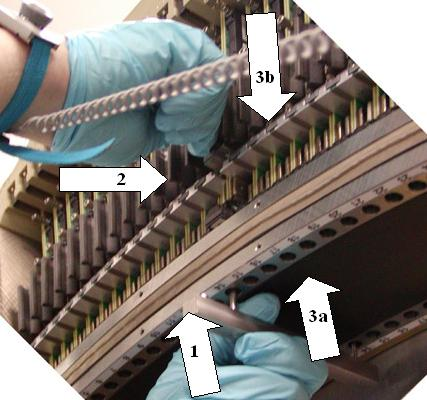
Remove the seating tool only after the module is seated on the detector rails.
Attach the bias tool to the detector rail to push the module against the back detector rail with a known force. See Illustration 19. The SATURN_64_HD detector requires a slightly different bias tool, which is shown in C2 of Illustration 7. Gloves can be removed at this point.
Illustration 19: Bias Tool
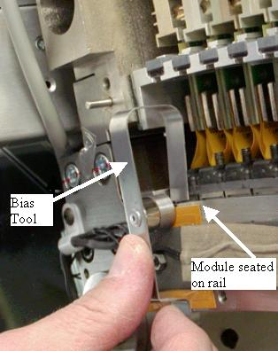
Insert both module screws on either side of the carbon window and torque to the value shown in Table 1. Torque the back screw first.
| NOTE: | Do NOT push up on the module screws. Pushing up may unseat the module and damage the detector collimator plates when the screws are tightened. |
Table 1: Detector Module Screw Torque
| 1.1 N-m | 0.8 lb-ft | 10 lb-in | 11.5 Kg-cm |
Remove the bias tool from the detector rail.
Insert the wedge clamp and lock it. (Orientation: Plate of the wedge clamp against the board)
Illustration 20: Wedge Clamp Insertion
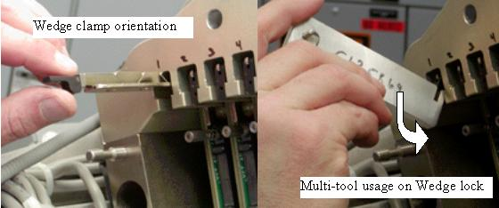
After locking the wedge clamp, carefully install and finger tighten both digital cable thumb screws using the process below to help avoid cross threading. The screws will go in easy when properly aligned.
Pull the digital cable screws away from the backplane initially and then in toward backplane to help initial connector alignment. Use a flashlight if necessary to see if the connector is aligned to the backplane socket. A “click” can be heard when you set down the screws indicating the screws have hit the backplane threaded socket.
Rotate the screws counter clockwise to hear a clicking sound made by the threads of the screw and threads of the socket. This will insure that the screws are lined up to the connector prior to threading them in.
Start both screws into the sockets. Thread both screws in together so the cable edge connector is pulled into the backplane straight. Stop and back out the screws if any squeak is heard as this indicates cross threading. Try rotating the screws counter clockwise until you hear a second “click”. This can help if the screw was previously cross threaded to avoid the crossed threads.
May need to carefully pull the digital cable screws to one side to help alignment if needed while performing steps a-c above.
Torque the screws per Table 2.
Table 2: Digital Cable Screw Torque
| 0.4 N-m | 0.3 lb-ft | 3.5 lb-in | 4 kg-cm |
Look across the modules from the side to make sure the digital cable screws are seated to the same height as the rest of the modules. This will indicate proper connection. SeeIllustration 21 for example side view. Note a top screw may not be fully seated in this view. Bottom screws all appear at same height.
Illustration 21: Module Screws Side View
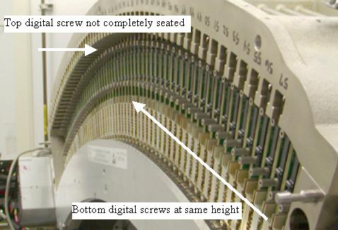
Insert the light seal clips on either side of the module (for all modules replaced). See Illustration 22.
Illustration 22: Light Seal Clip Insertion

Suggested but not Mandatory: Use the Deionizing fan to remove any static buildup during the replacement process. Hold the fan within 2 feet of the replaced module for 60 seconds.
Visually inspect the light seal plate for any hair or other debris. Wipe clean prior to installation to avoid getting debris inside detector.
Install the light seal cover being careful around thermistor wires, using torx head screws. Torque screws to the value shown in Table 3.
Table 3: Light Seal Screw Torque
| 2.5 N-m | 1.8 lb-ft | 22 lb-in | 25.5 Kg-cm |
Install the screw cover bands (both bands are identical) and torque the screws to the value shown in Table 4.
| NOTE: | The end screws on the screw cover band next to the rotating base frame can not be reached with the torque driver. Just snug them carefully with an offset hex wrench. Do not overtighten. |
Table 4: Screw Cover Band Torque
| 0.8 N-m | 0.6 lb-ft | 7 lb-in | 8.1 Kg-cm |
Install the air plenum as shown in Detector Air Plenum Removal/Installation.
Install the gantry rear cover.
Connect the front cover cabling but do not install the front cover until after checking module alignments and DAStools tests. The display is required to be connected for the test scans.
Turn on the gantry power from the service switch panel leaving HVDC and Axial drive disabled.
Note the current time. It will take the detector approximately 45 minutes to warm up to operating temperature from the time power is turned on. The alignment and DAStools tests can be run during the warm-up time but calibrations can not be started until the detector is up to temperature.
Release the gantry rotational lock and make sure gantry is ready for rotation.
Enable axial drive and HVDC from the service switch panel.
From the FRDM Process Tool currently open at the console select [Minicheck] and acknowledge the pop up window if the gantry is ready to rotate.
| NOTE: | The Wizard will first read the HART data from all detector modules. This will take less than 60 seconds. If this process takes longer, then the communication path to the detector has locked up. Abort the FRDM Wizard, reset the gantry power or perform a scan hardware reset, then restart the Wizard and try again. |
The alignment check will start after the scan button is pressed when prompted. (Non-rotating scan)
If needed later, The alignment check can also be run from a Unix Shell. Open a Unix shell and type the following command: zalignmentWizard
The alignment check will run 2 scans and show plots as shown in Illustration 23. Processing will take approximately 2 minutes after the scans are run.
| NOTE: | The plot window must be closed using the [File] menu before DASTools GUI will open. |
Illustration 23: Alignment Check Display
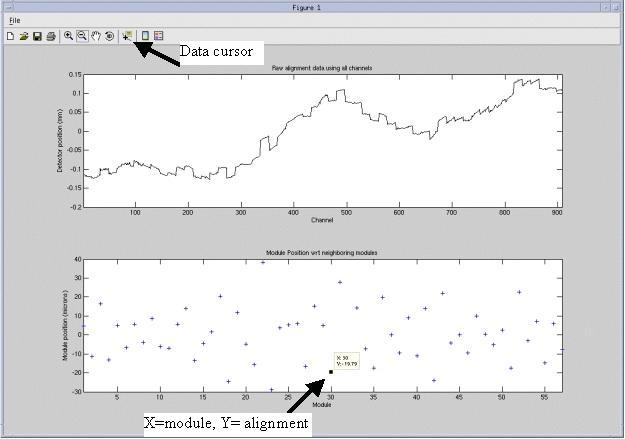
Table 5: Alignment Specifications
| Modules | Specifications | Notes |
| (Outer Modules)1-26, 32-57 | +/- 75 | Only look at modules you replaced. Do NOT move other modules. Some factory modules may not be within this specification. |
| (Center Modules) 27 and 31 ONLY | +/- 48 | If the module alignment using the bias tool does not position the module within specification, Use the special “Module adjust tool” instructions to make adjustments. |
| (Center Modules) 28, 29, 30 | +/- 32 | If the module alignment using the bias tool does not position the module within specification, Use the special “Module adjust tool” instructions to make adjustments. |
Check the bottom graph to make sure the module is within specifications defined by Table 5. Use the following guidelines for looking at the plots.
The plots autoscale to fit the data. First look at the Y-scale of the bottom plot. If the upper and lower values are at or less than the specification, then all points in the plot are within specification.
Module 1 and 57 are plotted on the very edge of the plots. In the example of Illustration 23, Module 1 can be found at +5 just above the zero mark. Module 57 can be found at -8 on the right side edge of the plot.
For any questionable plot point, select [Data Cursor] from the top tool bar and then use the mouse cursor to select the module “+” on the bottom graph. A small window will appear showing the module number and plot value. For example module 30 in Illustration 23 is shown to be at -19.
If more than two side by side modules are replaced at once an out of alignment condition can occur if none of the modules were aligned with the bias tool. This signature is different than any single module. See Illustration 24.
All 5 modules are out of alignment with the rest of the detector as seen on the top graph, yet modules 26, 27, 31, and 32 show out of alignment. This is further explained in the alignment wizard user instructions. Note this potential condition and see that it is the center 5 modules that all need to be repositioned as shown in the top graph. Modules 26 and 32 are effected due to the common edge with modules 27 and 31 and will show better results after the center set is repositioned.
Illustration 24: Center Module Offset Example

See zalignmentWizard User Instructions for more details if needed.
If the module alignment check does not pass; perform the following:
Reopen the Detector following all previous cautions and steps in Air Plenum Removal and FRDM Removal loosening module screws without actually removing them to allow module realignment.
| NOTE: | If you are working with one of the center 5 modules (27-31), try to reposition the module using the bias tool once. If the module does not align properly follow the special instructions in the Center Module Alignment Procedure to perform special manual alignment. |
Always use the bias tool to push the module toward the back rail. After the bias tool is installed, torque the module screws to the value shown in Table 1.
Re-assemble the system per Plenum Installation.
Exit the plot from the previous alignment scan using the File menu (do not minimize the window), Dismiss the DASTools GUI that shows up and select [MiniCheck] again to rerun the alignment wizard test. Rerun the module alignment check to verify proper alignment, perform this step again if alignment is still not passing.
After the alignment plot is closed (not minimized, must exit the window) the DASTools GUI will automatically show up. From the DASTools interface run the following rotating tests.
Select and Run [mA Ratio Test] (creates/updates the bad channel map)
Select and Run the [Auto Test] from DASTools.
If all the checks pass continue with the next step. If anything fails, troubleshoot per the failed test.
Perform any desired quick checks if problem was not a digital issue that was already verified by the mini check tests.
Install all gantry covers remembering to enable Axial Drive just before installing gantry right side cover.
Refer to Replacement → Gantry → Enclosure → (Cover Removal Procedures).
| NOTE: | Gantry covers MUST be in place and detector up to proper temperature prior to running full calibration. |
The user message log will indicate when the detector temperature has reached specification by a message indicating the detector has returned to normal temperature. You may have to wait for up to 45 minutes from the time the detector was powered on to allow detector to warm up prior to starting the calibration process. Calibrations are not allowed to start until the detector reaches proper temperature.
From the FRDM Process Tool currently open at the console select [Prep for Calibrations].
A test will be run prior to calibrations that will check for center artifacts. This test is specific for center module (27-31) and will only be run when a center module is replaced to make sure no center module artifacts have been introduced due to accidental movement of a center module. Acknowledge that the system is ready for gantry rotation and then press the [Start Scan] hard key when indicated to run the test.
The Center module test will report a Pass or Fail. If the center check fails, the center module just inserted is not compatible with the other center modules and needs to be replaced. A failure will not be a common occurrence since the system has been updated with a new calibration vector to account for center module variations. Only significant module issues should cause a failure. Potential IQ issues for a failing module include all center related artifacts including center spot and smudge. If the test passes, continue with calibrations.
Perform a [Collimator Cal].
Perform a full [Detailed Cal].
After the above calibrations a [Fastcal] must also be run from [Daily Prep] to complete the updates to the calibrations. (This is new with the VCT system)
Perform the Quality Assurance Test.
Perform a [Save State] to save the new calibration data.
From the FRDM Process Tool currently open at the console select [Update Detector Configuration] when the system is ready for customer operation. This will read and update the new detector configuration and perform any background cleanup of temporary software files created by the tool during the replacement process.
Fill out the VCT Digital Module Return Form included with the module or online. This information is important for root cause analysis of failed parts to improve quality of processes and future parts. This also helps clarify any issue reported that would not have been found by normal retests that could result in a No Defect Found.
Return all tools and equipment sent with module along with the replaced module(s).
Tools Return Policy
Re-package all provided service tools, in the original packages, and place into the FRU shipping container. Failure to return these items will result in your Service Contract being billed the significant cost of these tools.
Controlled Seating Tool
Bias Tool
Multi-tool
Torx T-20 driver bit